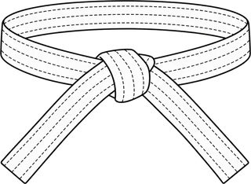
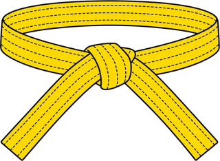
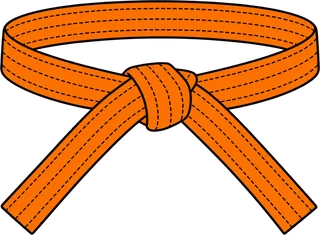
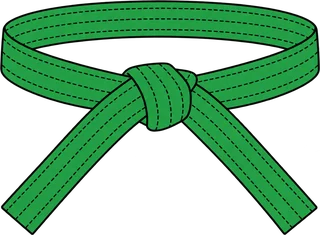
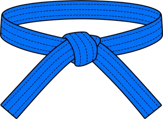
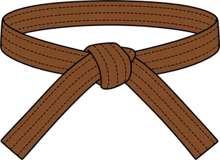
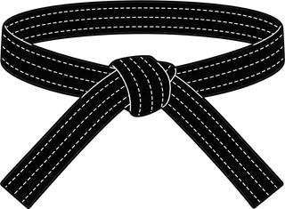

Caídas
Hacia atrás, de lado, al frente y rodando. Es lo primero que se aprende y lo que te permite entrenar sin lesionarte.
Ushiro · Yoko · Mae
El camino de la suavidad: usar el equilibrio y la fuerza del otro para proyectarlo. Aprendes a caer, a agarrar y a derribar, y terminas cada clase con randori.
Cada clase combina fundamentos, técnica en parejas y práctica libre. Las técnicas siguen el programa oficial de grados.
Hacia atrás, de lado, al frente y rodando. Es lo primero que se aprende y lo que te permite entrenar sin lesionarte.
Cómo tomar la solapa y la manga, y cómo sacar de balance al compañero antes de proyectarlo.
Técnicas de pierna, cadera y brazo: O-soto-gari, De-ashi-barai, Ippon-seoi-nage, O-goshi y más.
Inmovilizaciones como Kesa-gatame y Yoko-shiho-gatame, sus salidas, y randori para aplicarlo todo.
Requisitos para adultos (desde 17 años) según el reglamento de la Federación Deportiva Nacional de Judo de Chile. Cada fila indica lo necesario para obtener ese cinturón; el profesor puede ajustar los tiempos y los objetivos físicos. Toca un cinturón para ver sus técnicas con los videos oficiales del Kodokan.







Puntos de competencia: se ganan en torneos oficiales (2 por victoria ante un rango igual o superior, 1 ante un rango menor). Si no quieres competir, participar como voluntario en un torneo (árbitro, planillero u otro) suma 1 punto cada 2 horas. Fuente: Reglamento de ascenso grados kyu 2024–2028, Federación Deportiva Nacional de Judo de Chile.
Elige el día y la hora. Te llega un correo con la confirmación y un enlace para cambiar o cancelar.
Cargando calendario…
Videos: canal oficial del Kodokan (KODOKAN × IJF Academy). Programa: Reglamento de ascenso grados kyu 2024–2028, Federación Deportiva Nacional de Judo de Chile.